Fleet maintenance automation for 20,000+ companies
Fleet managers planned maintenance in spreadsheets and third-party tools. I designed a schedule inside FIT FLEET that shows every vehicle's service dates at a glance and prepares the booking for them. It is available to all clients.
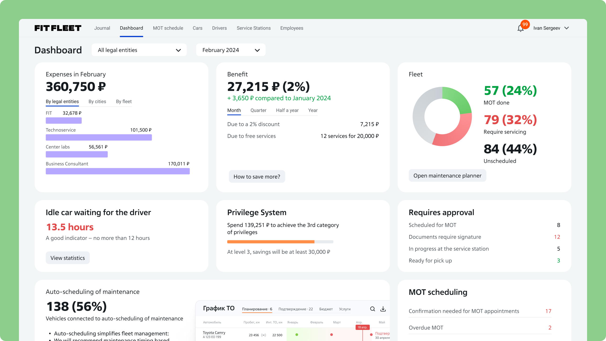
I designed the schedule and the design system, built all interactive prototypes and took part in user interviews with the design lead and PM. I designed the main screen together with the design lead. After each iteration I updated the layouts. After development, I reviewed the built design with the engineers.
The task
Before the schedule, FIT FLEET clients tracked maintenance in Excel files and filled them in by hand. Others used third-party services that had no link to FIT FLEET. Their fleets were already in the platform, because loading a fleet from Excel is simple, even all vehicles at once.
The goal was a maintenance schedule inside FIT FLEET, so managers stop switching between tools. Fleets range from 10 to 1,000 vehicles, so one screen had to work for both.
The schedule was a new tool in the platform, so success meant clients using it.
Small dots on a line cut reading time from a minute to 10–20 seconds
The first version used large colourful icons. One icon meant one service visit or tyre fitting.
In the first interview round it became clear that some clients would have around 50 icons on one screen. With a large fleet and extra events, the icons merged into one coloured mass. Testers needed about a minute to understand what they were looking at.
I replaced the icons with small, subtle dots on a timeline. After that, testers needed 10–20 seconds to see which vehicle goes where and when.
Six approaches to the schedule. Some were dropped before testing, others after the interviews. Subtle, neat dots stayed.
One schedule holds every date a fleet manager tracks
Clients asked for one universal tool. Besides maintenance, the schedule holds custom events such as insurance and driver power of attorney expiry.
A manager who opens the schedule in the morning sees which vehicles need documents renewed. The same screen shows which vehicles have an annual inspection in two weeks.
The yearly schedule.
Auto-scheduling pre-fills the booking, so the manager only confirms
FIT FLEET suggests a service visit for a vehicle and fills in every field of the booking. Managers only confirm it.
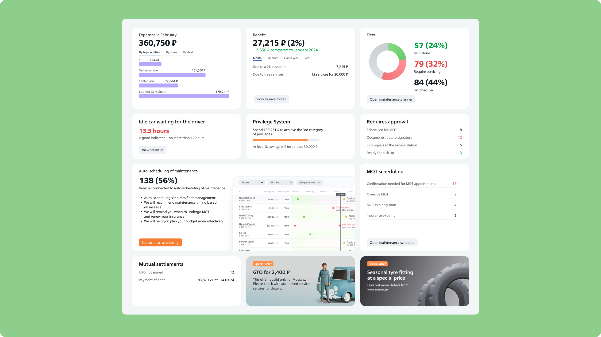
The main screen with the state of the fleet. The schedule and auto-scheduling open from here.
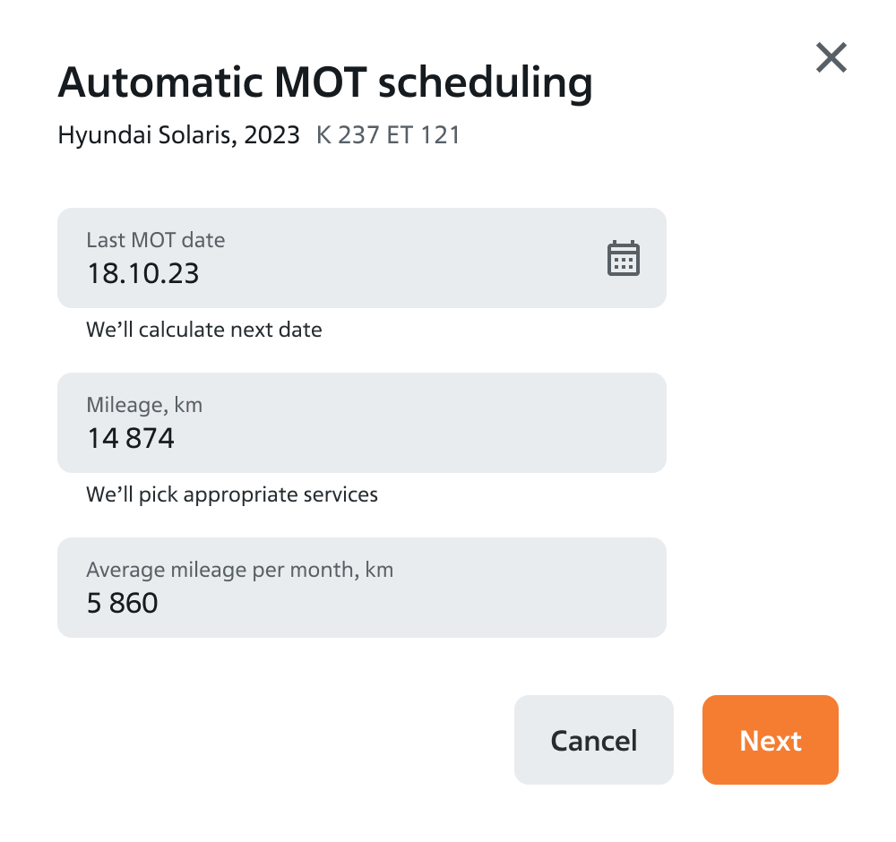
Auto-scheduling: settings for a vehicle.
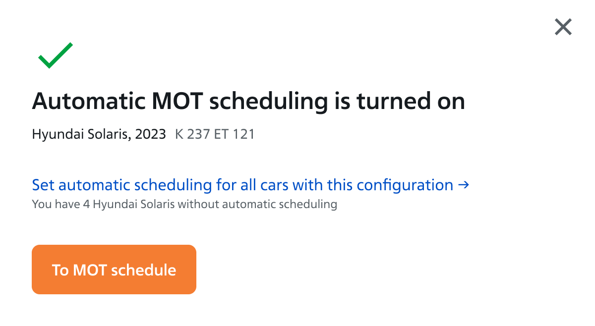
Auto-scheduling: confirmation.
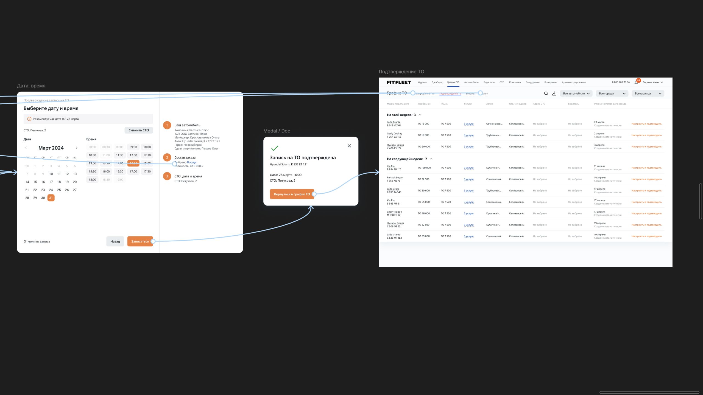
Booking steps: date and time, confirmation, and the list of visits created automatically.
Maintenance rules come from the database, and managers adjust them to their needs
Every vehicle has manufacturer recommendations: which diagnostics at which mileage and which work to carry out. The backend pulls these recommendations from the database, and the scheduler adds the services to the list when a manager books a visit.
A manager can edit the list for a make and model. They add or remove services for their own reasons, for example because of the region and season, or to cut costs. Changes apply to all vehicles of the same make and model.
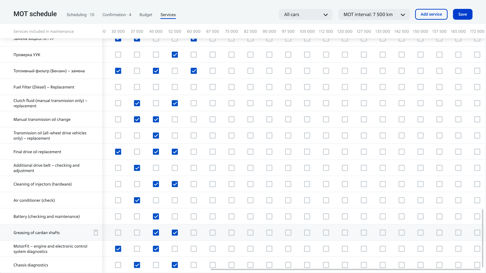
Service lists per make and model.
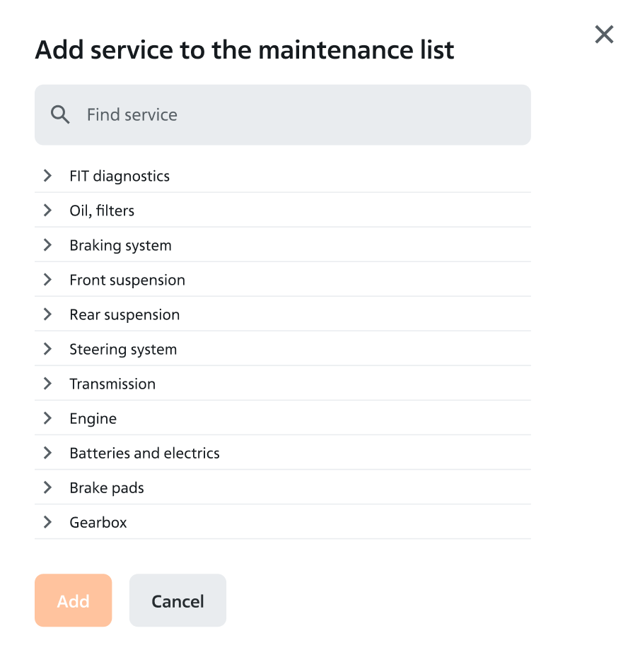
Adding a service: an empty list.
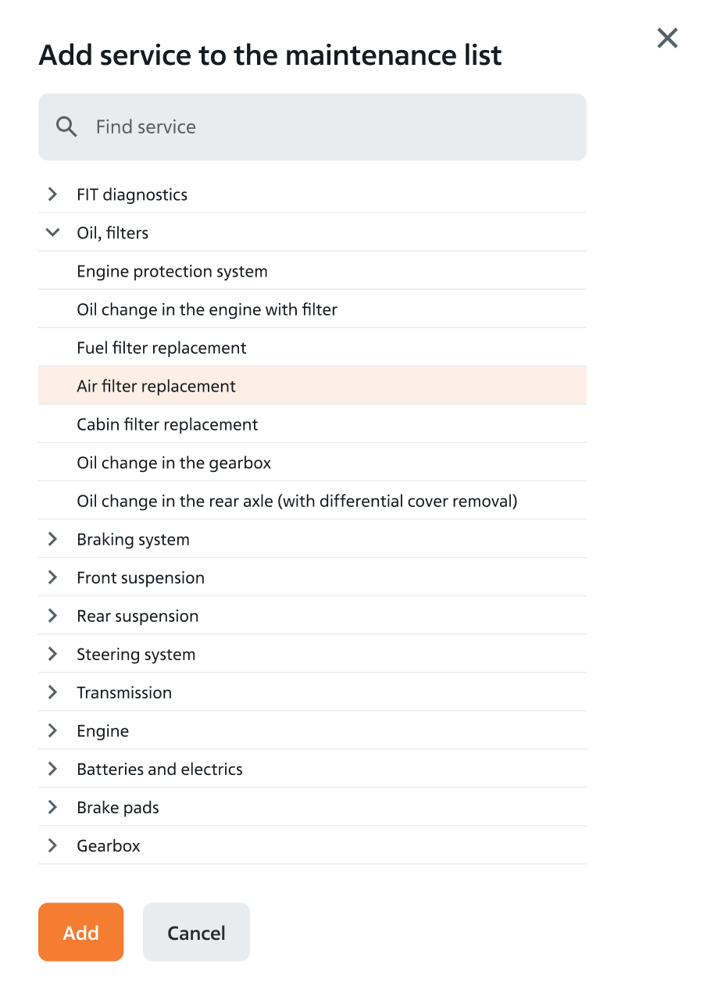
Adding a service: an opened group.
Four interview rounds and a design system that grew with them
The design lead and I collected references separately, then ran a joint brainstorm and chose a hypothesis. After that came the prototype and the interviews. Each round followed the same loop: prototype, interview, changes, next interview. Two to three people took part in every round, and some came back to discuss the changes between rounds. Participants were fleet managers from different legal entities, with fleets from 10 to 1,000 vehicles. I joined the interviews together with the design lead and PM.
To keep 100+ screens consistent, I built the design system on Material Design and adapted the components to the client's needs. After every round I updated the layouts.
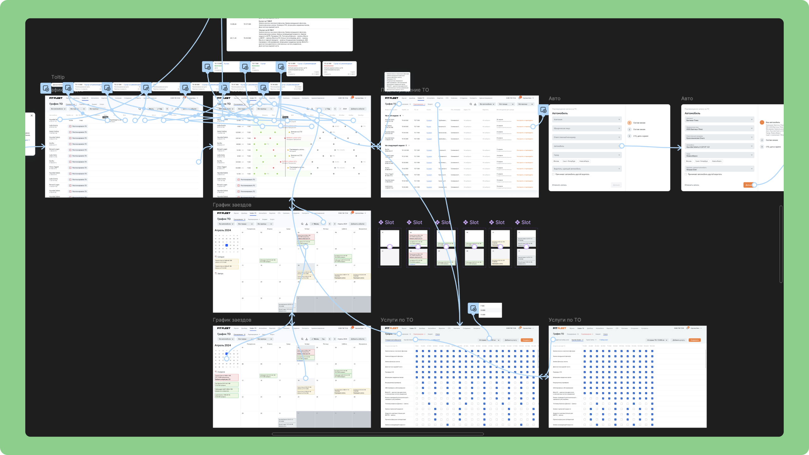
Part of the prototype used in the interviews: screens and the connections between them.
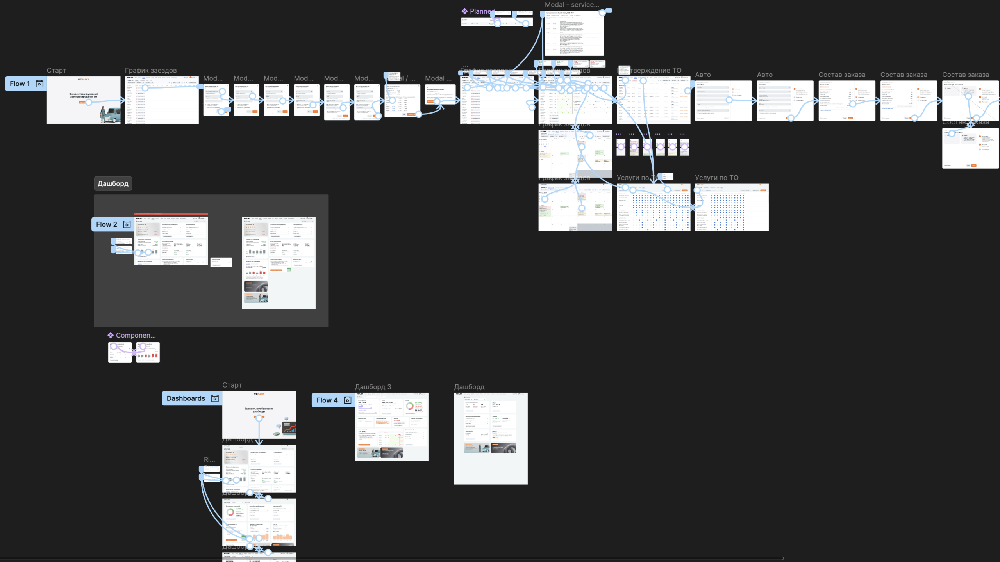
The Figma file with the schedule flows and the dashboard variants.

UI kit built on Material Design.
What was postponed
A monthly calendar view was part of the prototype and was tested in one interview round. At the last moment, the client's PM decided not to take it into development. Building it alongside the schedule was technically hard for the engineers, and their plan was already full of other priorities. The first release went live with the timeline.
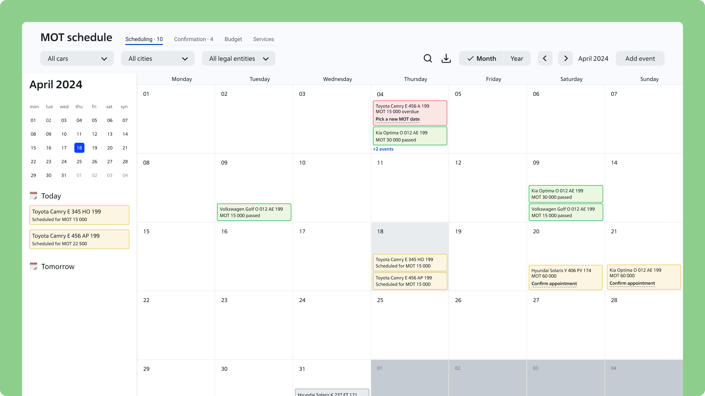
Monthly calendar view. Not released.
What I took from this project
A complex utility tool should not be decorated. Decoration makes it slower to scan and use when there is a lot of data.
What I would add next
With today's AI tools, I would add a daily summary for fleet managers. It would analyse the state of the fleet and list urgent tasks and overdue items each morning.
More work


Let's talk
Reach out if you're building something and want a senior pair of eyes on it. I read everything that comes in.